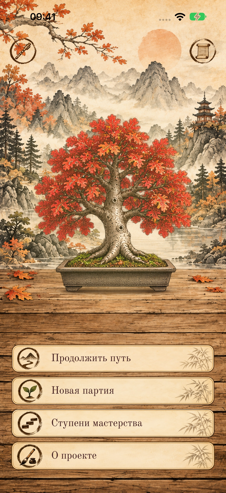
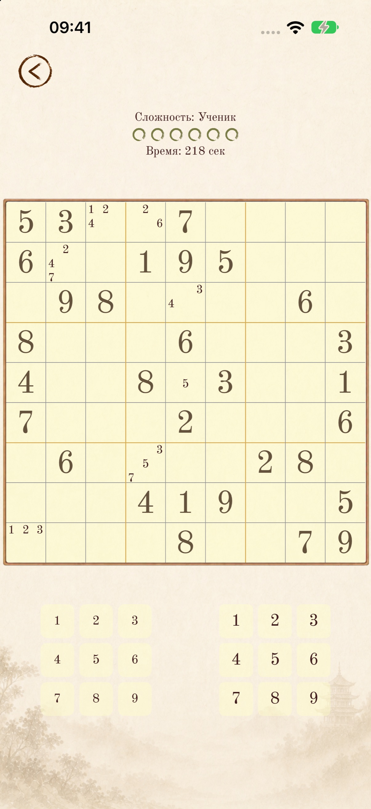
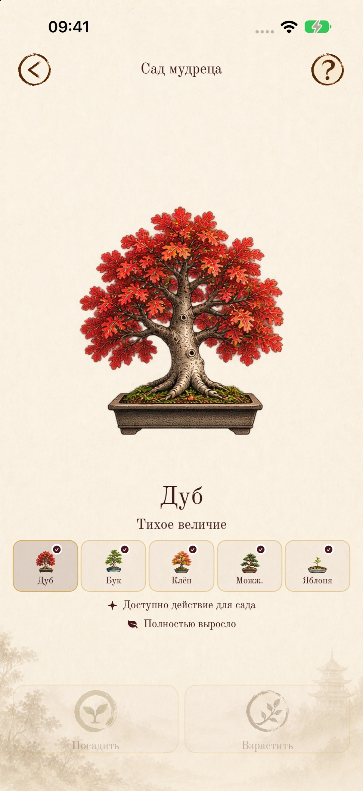
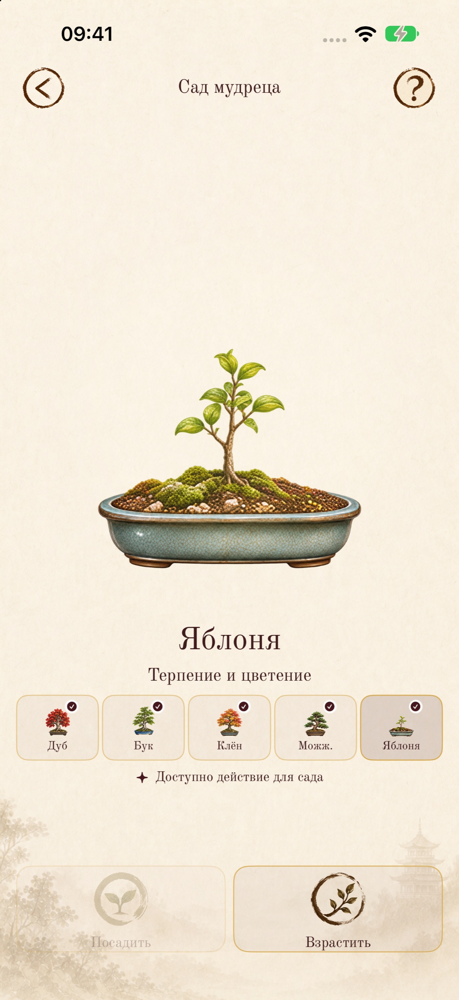

Сад из пяти деревьев
Выращивайте разные деревья и наблюдайте, как сад меняется вместе с вашим путём.
Grow five different trees and watch your garden take shape.
Судоку. Путь мудреца · Way of the Sage
Время остановиться. И найти решение.
Решайте судоку в своём темпе и создайте сад из пяти деревьев — шаг за шагом, партия за партией.
Solve at your own pace and grow a garden of five trees, one puzzle at a time.
В своём ритме · At your own pace
Каждая решённая головоломка становится шагом в саду. Выращивайте пять деревьев, выбирайте сложность и возвращайтесь к партии в своём ритме.
Выращивайте разные деревья и наблюдайте, как сад меняется вместе с вашим путём.
Grow five different trees and watch your garden take shape.
Выберите один из пяти уровней сложности. Dokushin — путь без подсветки совпадающих цифр и права на ошибку.
Five difficulty levels, including the uncompromising Dokushin mode.
Заметки, проверка ошибок и сохранение незавершённой игры помогают сосредоточиться на решении.
Notes, mistake checking, and saved games keep your focus on the puzzle.
Тёплая бумага, деревянные детали и авторская музыка Anna Aurnis. Играйте офлайн и без спешки.
Warm paper, wooden details, and an original soundtrack. Play offline, at your own pace.
Clarity. Patience. Peace.
Актуальные экраны игры из материалов релиза 3.3.
Current app screens from the 3.3 release materials.




Made with care for people who love sudoku. Free, private, and distraction-free.
Следующая глава · The next chapter
В TestFlight можно познакомиться с тестовой версией и помочь автору заметить то, что требует внимания. Это отдельная предварительная сборка: её оформление и возможности могут отличаться от версии в App Store.
Explore the beta and share feedback through TestFlight. Its design and features may differ from the App Store release.
Присоединиться к TestFlight ↗Для установки потребуется приложение Apple TestFlight. Доступность мест определяется страницей тестирования.
Community · Сообщество
Официальное сообщество игры. История создания, новости обновлений, художественные материалы и общение с игроками.
The official game community. The story behind the game, update news, artwork, and conversations with players.
ВКонтакте · VK ↗«Судоку. Путь мудреца» — независимая бесплатная игра без рекламы и обязательных покупок.
Если вам нравится проект, вы можете поддержать его развитие, рассказать об игре друзьям или присоединиться к нашему сообществу.
На авторском блоге Leprikon можно познакомиться с другими проектами разработчика и при желании оставить добровольную благодарность.
Sudoky is an independent, free game with no advertising or required purchases. If you enjoy it, you can support its development, tell your friends, or join our community. Leprikon’s author blog introduces the developer’s other projects and offers an optional way to say thank you.
Истории создания независимых приложений, игр и творческих экспериментов. Возможность добровольно поддержать автора.
Stories behind independent apps, games, and creative experiments, with an option to support the author voluntarily. This is Evgeny Zotchik’s blog about all his projects.
Авторский блог и поддержка · Blog & support ↗Поддержка не предоставляет игровых преимуществ и не является условием использования приложения.
Support provides no gameplay benefits and is never required to use the app.